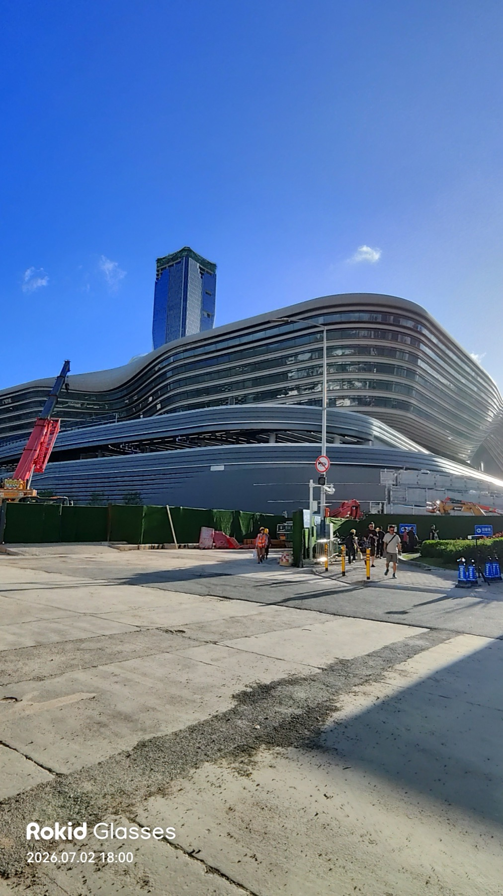
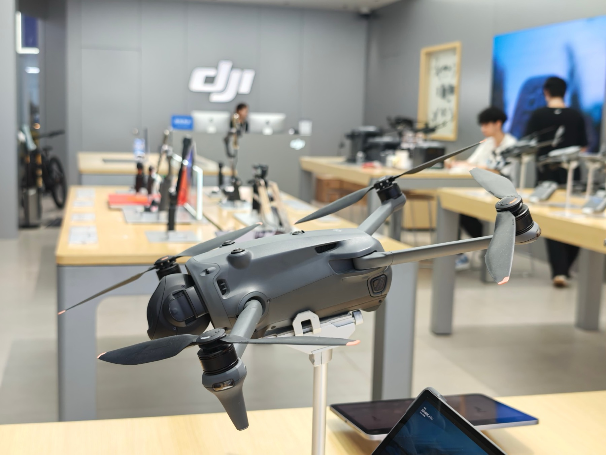

香港に住んで30年、深圳へは月に何度も渡ります。ドローンを買いに、電脳街を歩きに、ときには茶淹れポットやひげ剃りに驚かされに。ここでは、私がいちばんよく使う「旺角を出て、その日の昼にはDJI旗艦店にいる」ルートを軸に、口岸（イミグレーション）の使い分けと、2026年夏時点の最新事情をまとめます。
口岸を選ぶ — 行き先で決める
香港と深圳の間には複数の口岸があり、深圳側のどこへ行くかで選ぶのが基本です。私の使い分けはこうです。
| 口岸 | 香港側からの行き方 | 向いている行き先・特徴 |
|---|---|---|
| 皇崗 | 旺角などから越境バス1本 | 24時間運用（執筆時点）。鉄道直結ではないぶん人の流れが少なく、荷物検査もスムーズ。慣れたらいちばん快適で、私はここを選ぶことが多い。新ターミナルを建設中 |
| 福田（落馬洲支線） | 東鉄線の支線終点から徒歩 | 深圳地下鉄4号線に直結。電車を乗り継ぐだけなので、初めてでも安心。華強北（電脳街）方面へも乗り換え1回 |
| 羅湖 | 東鉄線の終点からそのまま | 老舗の定番。羅湖商業城や東門方面へ |
| 深圳湾 | 越境バス | 南山・深圳湾方面へ。西側に用があるとき |
運用時間や混雑は変わるので、渡る前に香港入境事務處の管制站一覧で確認を。そして中国の連休には近づかないのが鉄則です。いつが連休かは4地域の祝日カレンダーにまとめてあります（中国の振替出勤日も載せています）。

本命ルート：旺角 → 皇崗 → DJI旗艦店
DJIの旗艦店詣でなら、このルートがいちばん楽です。太子駅C出口近くの乗り場から越境バスに乗る。バスは皇崗口岸に直接入り、そこで香港出境と中国入境を済ませ、中国側に出たら地下鉄で深圳湾公園駅へ。ピラミッドのような三角形の建物が目印のDJI旗艦店は、駅を出てすぐです。私の実測では、朝9時半のバスに乗って11時にはDJI旗艦店に着きます（回郷証など入国資格が整っていれば）。
皇崗を推す理由は素朴で、鉄道直結の羅湖や福田に比べて人の流れが少なく、荷物検査もスムーズだから。バスを降りてから出入境までの動線も短く、e道（後述）なら本当にあっという間です。初めての方は電車で行ける福田口岸（次章）が安心ですが、深圳通いに慣れてくると、このバスの快適さに戻ってくるはずです。太子のバス停の場所や乗り方は、初出のnote記事が写真つきでいちばん詳しいので（後半有料）、初めて渡る方はそちらを見てから出発してください。

華強北（電脳街）へ行くなら福田口岸
電脳街・華強北が目的地なら、東鉄線で落馬洲支線の終点まで行き、福田口岸を渡るのが分かりやすい。電車だけで完結するので、初めての深圳でも迷いにくいルートです。福田口岸は深圳地下鉄4号線に直結していて、会展中心で1号線に乗り換えれば華強路はすぐ（駅構成は執筆時点）。なお市内にはDJIの直営店が何店かありますが、ピラミッド形の旗艦店は深圳湾側です——行き方は上の本命ルートを。スマホの修理・部品からガジェットの掘り出し物まで、あの街の歩き方はまた別の記事で書いていますが、行き方だけならこれで足ります。
e道の現在 — 顔だけで渡れる（2026年夏）
回郷証を持っていてe道（自動化ゲート）に登録済みなら、いまの出入境は顔だけです。2024年ごろはカードをスキャナーに置く手順がありましたが、2025年11月以降それも廃止されました。ブース入口のカメラに顔を向けて5〜10秒、ゲートが開いたら中で顔と指紋の認証——全部で30秒から1分です。認証に10秒近くかかることもありますが、沈黙に耐えてカメラを見続けるのがコツです。
未登録でも、有人カウンターで回郷証を出すだけ。紙の入境カードはもう書きません。指紋採取のときには日本語の音声ガイダンスまで流れます。e道の登録自体は皇崗口岸の中国側施設で5分で完了し（受付08:00〜18:00・執筆時点）、その日の帰りから使えます。回郷証の取得から初入国までの全記録は回郷証ガイドに、2026年夏の最新事情はnoteの新しい記事にまとめています。
買って帰るなら — 離境退税を忘れずに
深圳でDJI製品などを買うなら、離境退税（出国時の税還付）が使えます。私がDJI Mini 5 Pro Fly More Combo（5,988元）を買ったときは、手数料2%を引かれて538.92元（約9%）が戻りました。条件は執筆時点で「同一店舗で200元以上」「購入から90日以内に出国」「未使用・未開封で携帯」。DJIストアは動作テスト後に専用シールで再封印してくれるので心配いりません。還付カウンターは羅湖・福田・落馬洲の各口岸や宝安空港にあり、手続きは10分ほどでした。詳細は初出記事へ。
小さな注意
深圳側の支払いは微信支付（WeChat Pay）か支付宝（Alipay）が前提の場面が多いので、海外カードの紐付けを済ませてから渡ると気が楽です。連休の口岸は本当に混みます——祝日カレンダーで中国側の連休を避けてください。そして口岸の頭上では、公安のドローンが普通に飛んでいます。驚かないように（その日の断章）。
チケット・通信の手配
越境の足と通信は、日本語で事前手配できます。香港⇔深圳の乗合コーチ（越境バス）はKlookで予約でき、深圳湾ルートの
直行便や、船で渡りたい人向けの
香港⇔蛇口フェリーもあります。SIMとeSIMは実測レビュー付きのSIM / Connectivityまとめからどうぞ。当日券で困ったことは私はありませんが、連休前後だけは事前確保が安心です。
※ 上記の越境交通（Klook）の予約リンクには広告（アフィリエイト）を含みます。リンク経由でご予約いただくと、当サイト運営者・田路昌也に紹介料が入ることがあります（お支払い額は変わりません）。